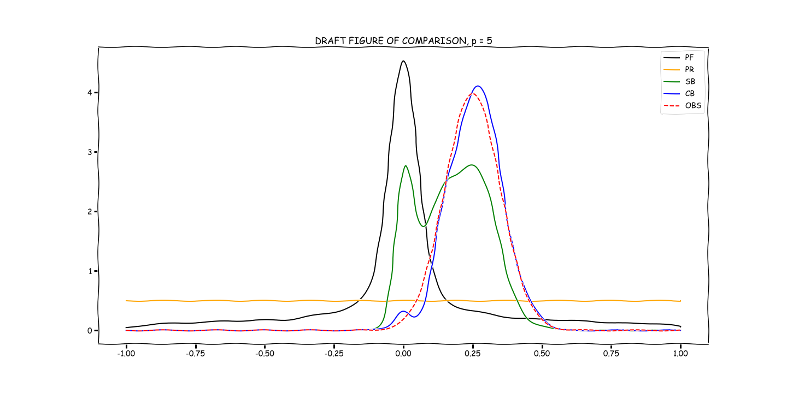

Usage
A basic example of usage is given below.
import cbayes.sample as samp import cbayes.distributions as dist import cbayes.solve as solve def QoI_fun(lam): return np.power(lam, 5).reshape(-1, 1) N = int(5E3) # number of samples input_dim = 1 # specify dimension. Map above only makes sense in 1D. s_set = samp.sample_set(size=(N, input_dim)) for i in range(input_dim):# define prior distribution s_set.set_dist('uni', {'loc':-1, 'scale':2}, 0) # uniform distribution as prior s_set.generate_samples() # Now that densities have been defined, draw Monte-Carlo samples. p_set = samp.map_samples_and_create_problem(s_set, QoI_fun) # Push samples through model. # normal distribution as observed - keyword syntax shown below for contrast to above. p_set.set_observed_dist(dist='norm', dim=0, kwds={'loc':0.25, 'scale': 0.1}) # compute pushforward of prior - gaussian kernel chosen by Scott's Rule p_set.compute_pushforward_dist() p_set.set_ratio() # Solve SIP in Consistent Bayesian Framework solve.problem(p_set) # default method is Accept/Reject # p_set.accept_inds now holds the indices for samples accepted from p_set.input.samples
A plot of these results follows:

For now, simply notice that the Consistent Bayes posterior push-forward (blue) matches the observed density (dotted lines). However, the Statistical Bayes posterior push-forward (red) does not, owing to the influence of the push-forward of the prior (black).
More will soon appear in the Examples section.